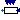
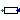
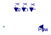
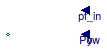
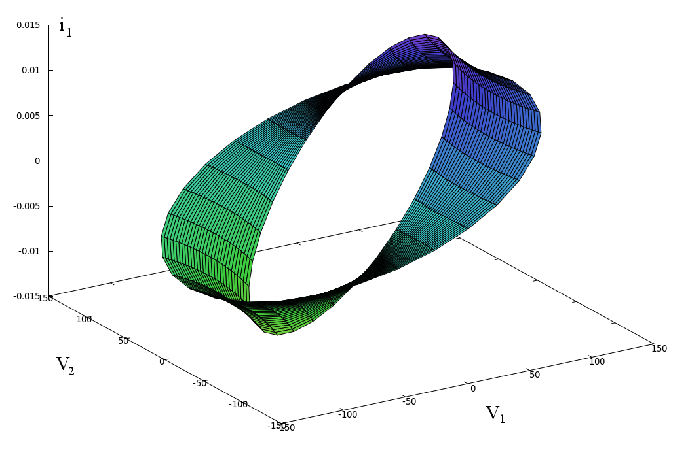

Package with load models for one phase AC systems
This package contains models that represent different types of AC single phase loads.
Extends from Modelica.Icons.VariantsPackage (Icon for package containing variants).
| Name | Description |
|---|---|
| Model of a capacitive and resistive load | |
|  Impedance | Model of a generic impedance |
| Inductive | Model of an inductive and resistive load |
|  Resistive | Model of a resistive load |
| Package with example models |
 Buildings.Electrical.AC.OnePhase.Loads.Capacitive
Buildings.Electrical.AC.OnePhase.Loads.Capacitive
Model of a capacitive and resistive load

Model of an capacitive load. It may be used to model a bank of capacitors.
The model computes the complex power vector as
S = P + jQ = V ⋅ i*
where V is the voltage phasor and i* is the complex conjugate of the current phasor. The voltage and current phasors are shifted by an angle φ.
The load model takes as input the power consumed by the inductive load and
the power factor pf=cos(φ). The power
can be either fixed using the parameter P_nominal, or
it is possible to specify a variable power using the inputs y or
Pow.
The power factor can be either specified by the parameter pf
or using the input variable pf_in.
The different modes can be selected with the parameter
mode and use_pf_in, see
Buildings.Electrical.Interfaces.Load and
Buildings.Electrical.Interfaces.CapacitiveLoad for more information.
Given the active power P and the power factor pf the complex power Q is computed as
Q = - P tan(arccos(pf)).
The equations of the model can be rewritten as
i1 = (P V1 + Q V2)/(V12 + V22),
i2 = (P V2 - Q V1)/(V12 + V22),
where i1, i2, V1, and V2 are the real and imaginary parts of the current and voltage phasors.
The nonlinearity of the model is due to the fact that the load consumes the power specified by the variables P and Q irrespectively of the voltage of the load.
When multiple loads are connected in a grid through cables that cause voltage drops, the dimension of the system of nonlinear equations increases linearly with the number of loads. This nonlinear system of equations introduces challenges during the initialization, as Newton solvers may diverge if initialized far from a solution, as well during the simulation. In this situation, the model can be parameterized to use a linear approximation as discussed in the next section.
Given the constraints and the two-dimensional nature of the problem, it is difficult to find a linearized version of the AC load model. A solution could be to divide the voltage domain into sectors, and for each sector compute the best linear approximation. However the selection of the proper approximation depending on the value of the voltage can generate events that increase the simulation time. For these reasons, the linearized model assumes a voltage that is equal to the nominal value
i1 = (P V1 + Q V2)/VRMS2,
i2 = (P V2 - Q V1)/VRMS2,
where VRMS is the Root Mean Square voltage os the AC system. Even though this linearized version of the load model introduces an approximation error in the current, it satisfies the contraints related to the ratio of the active and reactive powers.
The initialization problem can be simplified using the homotopy operator. The homotopy operator uses two different types of equations to compute the value of a variable: the actual one and a simplified one. The actual equation is the one used during the normal operation. During initialization, the simplified equation is first solved and then slowly replaced with the actual equation to compute the initial values for the nonlinear systems of equations. The load model uses the homotopy operator, with the linearized model being used as the simplified equation. This numerical expedient has proven useful when simulating models with more than ten connected loads.
The load model has a parameter initMode that can be used to select
the assumption to use during the initialization phase by the homotopy operator.
The choices are between a null current or the linearized model.
Extends from Buildings.Electrical.Interfaces.CapacitiveLoad (Partial model of a capacitive load).
| Type | Name | Default | Description |
|---|---|---|---|
| replaceable package PhaseSystem | PartialPhaseSystem | Phase system | |
| Modelling assumption | |||
| Boolean | linearized | false | If true, the load model is linearized |
| Load | mode | Buildings.Electrical.Types.L... | Type of load model (e.g., steady state, dynamic, prescribed power consumption, etc.) |
| Boolean | use_pf_in | false | If true, the power factor is defined by an input |
| Nominal conditions | |||
| Power | P_nominal | Nominal power (negative if consumed, positive if generated) [W] | |
| Voltage | V_nominal.start | 110 | Nominal voltage (V_nominal >= 0) [V] |
| Real | pf | 0.8 | Power factor |
| Initialization | |||
| InitMode | initMode | Buildings.Electrical.Types.I... | Initialization mode for homotopy operator |
| Type | Name | Description |
|---|---|---|
| replaceable package PhaseSystem | Phase system | |
| input RealInput | y | Fraction of the nominal power consumed [1] |
| input RealInput | Pow | Power consumed [W] |
| input RealInput | pf_in | Power factor [1] |
Model of a generic impedance

Model of an impedance. This model can be used to represent any type of resistive, inductive or capacitive load.
Note that the power consumed by the impedance model will drecrease if its voltage decreases.
The model of the impedance is
V = Z i,
where Z = R + j X is the impedance. The value of the resistance R and the
reactance X depend on the type of impedance. Different types of impedances
can be selected using the boolean parameters inductive, use_R_in,
use_L_in, and use_C_in. See
Buildings.Electrical.Interfaces.Impedance for more details.
Extends from Buildings.Electrical.Interfaces.Impedance (Partial model representing a generalized impedance).
| Type | Name | Default | Description |
|---|---|---|---|
| replaceable package PhaseSystem | PartialPhaseSystem | Phase system | |
| Boolean | inductive | true | If true, the load is inductive, otherwise it is capacitive |
| Resistance | R | 1 | Resistance [Ohm] |
| Inductance | L | 0 | Inductance [H] |
| Capacitance | C | 0 | Capacitance [F] |
| Initialization | |||
| InitMode | initMode | Buildings.Electrical.Types.I... | Initialization mode for homotopy operator |
| Variable load | |||
| Resistance | |||
| Boolean | use_R_in | false | If true, R is specified by an input |
| Resistance | RMin | 1e-4 | Minimum value of the resistance [Ohm] |
| Resistance | RMax | 1e2 | Maximum value of the resistance [Ohm] |
| Capacitance | |||
| Boolean | use_C_in | false | If true, C is specified by an input |
| Capacitance | CMin | 1e-4 | Minimum value of the capacitance [F] |
| Capacitance | CMax | 1e2 | Maximum value of the capacitance [F] |
| Inductance | |||
| Boolean | use_L_in | false | If true, L is specified by an input |
| Inductance | LMin | 1e-4 | Minimum value of the inductance [H] |
| Inductance | LMax | 1e2 | Maximum value of the inductance [H] |
| Type | Name | Description |
|---|---|---|
| replaceable package PhaseSystem | Phase system | |
| input RealInput | y | Fraction of the nominal power consumed [1] |
| input RealInput | Pow | Power consumed [W] |
| input RealInput | y_R | Input that sepecify variable R |
| input RealInput | y_C | Input that sepecify variable C |
| input RealInput | y_L | Input that sepecify variable L |
 Buildings.Electrical.AC.OnePhase.Loads.Inductive
Buildings.Electrical.AC.OnePhase.Loads.Inductive
Model of an inductive and resistive load

Model of an inductive load. It may be used to model an inductive motor.
The model computes the complex power vector as
S = P + jQ = V ⋅ i*,
where V is the voltage phasor and i* is the complex conjugate of the current phasor. The voltage and current phasors are shifted by an angle φ.
The load model takes as input the power consumed by the inductive load and
the power factor pf=cos(φ). The power
can be either fixed using the parameter P_nominal, or
it is possible to specify a variable power using the inputs y or
Pow.
The power factor can be either specified by the parameter pf
or using the input connector pf_in.
The different modes can be selected with the parameter
mode and use_pf_in, see
Buildings.Electrical.Interfaces.Load and
Buildings.Electrical.Interfaces.InductiveLoad for more information.
Given the active power P and the power factor pf, the complex power Q is computed as
Q = P tan(arccos(pf)).
The equations of the model can be rewritten as
i1 = (P V1 + Q V2)/(V12 + V22),
i2 = (P V2 - Q V1)/(V12 + V22),
where i1, i2, V1, and V2 are the real and imaginary parts of the current and voltage phasors.
The nonlinearity of the model is due to the fact that the load consumes the power specified by the variables P and Q, irrespectively of the voltage of the load.
When multiple loads are connected in a grid through cables that cause voltage drops, the dimension of the system of nonlinear equations increases linearly with the number of loads. This nonlinear system of equations introduces challenges during the initialization, as Newton solvers may diverge if initialized far from a solution, as well during the simulation. In this situation, the model can be parameterized to use a linear approximation as discussed in the next section.
Given the constraints and the two-dimensional nature of the problem, it is difficult to find a linearized version of the AC load model. A solution could be to divide the voltage domain into sectors, and for each sector compute the best linear approximation. However the selection of the proper approximation depending on the value of the voltage can generate events that increase the simulation time. For these reasons, the linearized model assumes a voltage that is equal to the nominal value
i1 = (P V1 + Q V2)/VRMS2,
i2 = (P V2 - Q V1)/VRMS2,
where VRMS is the Root Mean Square voltage of the AC system. Even though this linearized version of the load model introduces an approximation error in the current, it satisfies the contraints related to the ratio of the active and reactive powers.
The initialization problem can be simplified using the homotopy operator. The homotopy operator uses two different types of equations to compute the value of a variable: the actual one and a simplified one. The actual equation is the one used during the normal operation. During initialization, the simplified equation is first solved and then slowly replaced with the actual equation to compute the initial values for the nonlinear systems of equations. The load model uses the homotopy operator, with the linearized model being used as the simplified equation. This numerical expedient has proven useful when simulating models with more than ten connected loads.
The load model has a parameter initMode that can be used to select
the assumption to use during the initialization phase by the homotopy operator.
The choices are between a null current or the linearized model.
Extends from Buildings.Electrical.Interfaces.InductiveLoad (Partial model of an inductive load).
| Type | Name | Default | Description |
|---|---|---|---|
| replaceable package PhaseSystem | PartialPhaseSystem | Phase system | |
| Modelling assumption | |||
| Boolean | linearized | false | If true, the load model is linearized |
| Load | mode | Buildings.Electrical.Types.L... | Type of load model (e.g., steady state, dynamic, prescribed power consumption, etc.) |
| Boolean | use_pf_in | false | If true, the power factor is defined by an input |
| Nominal conditions | |||
| Power | P_nominal | Nominal power (negative if consumed, positive if generated) [W] | |
| Voltage | V_nominal.start | 110 | Nominal voltage (V_nominal >= 0) [V] |
| Real | pf | 0.8 | Power factor |
| Initialization | |||
| InitMode | initMode | Buildings.Electrical.Types.I... | Initialization mode for homotopy operator |
| Type | Name | Description |
|---|---|---|
| replaceable package PhaseSystem | Phase system | |
| input RealInput | y | Fraction of the nominal power consumed [1] |
| input RealInput | Pow | Power consumed [W] |
| input RealInput | pf_in | Power factor [1] |
Model of a resistive load

Model of a resistive load. It may be used to model a load that has a power factor of one.
The model computes the complex power vector as
S = P + jQ = V ⋅ i*
where V is the voltage phasor and i* is the complex conjugate of the current phasor.
The load model takes as input the power consumed by the inductive load and
the power factor pf=cos(φ). The power
can be either fixed using the parameter P_nominal, or
it is possible to specify a variable power using the inputs y or
Pow. The different modes can be selected with the parameter
mode, see
Buildings.Electrical.Interfaces.Load for more information.
The equations of the model can be rewritten as
i1 = (P V1 + Q V2)/(V12 + V22),
i2 = (P V2 - Q V1)/(V12 + V22),
where i1, i2, V1, and V2 are the real and imaginary parts of the current and voltage phasors.
Since the model represents a load with a power factor of one, the complex power is Q = 0. This leads to the following equations where there are nonlinear equations that relate the current to the voltage
i1 = P V1/(V12 + V22)
i2 = P V2/(V12 + V22)
The non-linearity is due to the fact that the load consumes the power specified by the variable P, irrespectively of the voltage of the load. The figure below shows the relationship between the real part of the current phasor and the real and imaginary voltages of the load.

When multiple loads are connected in a grid through cables that cause voltage drops, the dimension of the system of nonlinear equations increases linearly with the number of loads. This nonlinear system of equations introduces challenges during the initialization, as Newton solvers may diverge if initialized far from a solution, as well during the simulation. In this situation, the model can be parameterized to use a linear approximation as discussed in the next section.
Given the constraints and the two-dimensional nature of the problem, it is difficult to find a linearized version of the AC load model. A solution could be to divide the voltage domain into sectors, and for each sector compute the best linear approximation. However, the selection of the proper approximation depending on the value of the voltage can generate events that increase the simulation time. For these reasons, the linearized model assumes a voltage that is equal to the nominal value
i1 = P V1/VRMS2
i2 = P V2/VRMS2
where VRMS is the Root Mean Square voltage of the AC system. Even though this linearized version of the load model introduces an approximation error in the current, it satisfies the contraints related to the ratio of the active and reactive powers.
The image below show the linearized function

The initialization problem can be simplified using the homotopy operator. The homotopy operator uses two different types of equations to compute the value of a variable: the actual one and a simplified one. The actual equation is the one used during the normal operation. During initialization, the simplified equation is first solved and then slowly replaced with the actual equation to compute the initial values for the nonlinear system of equations. The load model uses the homotopy operator, with the linearized model being used as the simplified equation. This numerical expedient has proven useful when simulating models with more than ten connected loads.
The load model has a parameter initMode that can be used to select
the assumption to use during the initialization phase by the homotopy operator.
The choices are between a null current or the linearized model.
Extends from Buildings.Electrical.Interfaces.Load (Partial model for a generic load).
| Type | Name | Default | Description |
|---|---|---|---|
| replaceable package PhaseSystem | PartialPhaseSystem | Phase system | |
| Modelling assumption | |||
| Boolean | linearized | false | If true, the load model is linearized |
| Load | mode | Buildings.Electrical.Types.L... | Type of load model (e.g., steady state, dynamic, prescribed power consumption, etc.) |
| Nominal conditions | |||
| Power | P_nominal | Nominal power (negative if consumed, positive if generated) [W] | |
| Voltage | V_nominal.start | 110 | Nominal voltage (V_nominal >= 0) [V] |
| Initialization | |||
| InitMode | initMode | Buildings.Electrical.Types.I... | Initialization mode for homotopy operator |
| Type | Name | Description |
|---|---|---|
| replaceable package PhaseSystem | Phase system | |
| input RealInput | y | Fraction of the nominal power consumed [1] |
| input RealInput | Pow | Power consumed [W] |